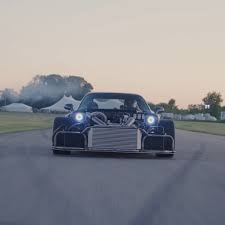

How to Turn Any Car into a Race Car
Reducing the weight of your car is crucial for better performance on the racetrack. Here are some ways to achieve weight reduction:
- Remove unnecessary interior components like rear seats, carpets, and sound deadening materials.
- Replace heavy stock parts with lightweight alternatives, such as carbon fiber body panels.
- Use lightweight racing seats and harnesses instead of heavy stock seats.
- Consider using lighter wheels and tires.
Increasing the power of your car can significantly improve its racing performance. Here are some power modification options:
- Install a performance intake and exhaust system for improved airflow.
- Upgrade the engine with high-performance components like camshafts, pistons, and headers.
- Consider adding forced induction systems like turbochargers or superchargers.
Safety should always be a top priority when turning a car into a race car. Here are some safety measures to consider:
- Install a roll cage to provide structural rigidity and protect the occupants in case of a rollover.
- Invest in a fire suppression system.
- Upgrade the stock seatbelts to racing harnesses for better restraint during high-speed maneuvers.
- Consider adding a racing seat with appropriate side bolstering for improved support.
Enhancing the braking capabilities of your car is crucial for better control and stopping power. Here's what you can do:
- Upgrade the brake pads and rotors to high-performance options.
- Consider installing a big brake kit for improved heat dissipation and braking performance.
- Upgrade the brake lines to stainless steel for better pedal feel and durability.
Aerodynamics play a vital role in race car performance, especially in generating downforce. Consider the following aerodynamic modifications:
- Add a front splitter to direct airflow and reduce lift.
- Install a rear wing or spoiler to generate downforce and improve stability.
- Consider adding diffusers to manage airflow underneath the car.
- Ensure the body panels are properly aligned and sealed to minimize drag.
Weight Reduction
Reducing the weight of your car is crucial for better performance on the racetrack. Here are some ways to achieve weight reduction:
- Remove unnecessary interior components like rear seats, carpets, and sound deadening materials.
- Replace heavy stock parts with lightweight alternatives, such as carbon fiber body panels.
- Use lightweight racing seats and harnesses instead of heavy stock seats.
- Consider using lighter wheels and tires.
Power Modifications
Increasing the power of your car can significantly improve its racing performance. Here are some power modification options:
- Install a performance intake and exhaust system for improved airflow.
- Upgrade the engine with high-performance components like camshafts, pistons, and headers.
- Consider adding forced induction systems like turbochargers or superchargers.
Safety
Safety should always be a top priority when turning a car into a race car. Here are some safety measures to consider:
- Install a roll cage to provide structural rigidity and protect the occupants in case of a rollover.
- Invest in a fire suppression system.
- Upgrade the stock seatbelts to racing harnesses for better restraint during high-speed maneuvers.
- Consider adding a racing seat with appropriate side bolstering for improved support.
Upgraded Brakes
Enhancing the braking capabilities of your car is crucial for better control and stopping power. Here's what you can do:
- Upgrade the brake pads and rotors to high-performance options.
- Consider installing a big brake kit for improved heat dissipation and braking performance.
- Upgrade the brake lines to stainless steel for better pedal feel and durability.
Aerodynamic Modifications for Downforce
Aerodynamics play a vital role in race car performance, especially in generating downforce. Consider the following aerodynamic modifications:
- Add a front splitter to direct airflow and reduce lift.
- Install a rear wing or spoiler to generate downforce and improve stability.
- Consider adding diffusers to manage airflow underneath the car.
- Ensure the body panels are properly aligned and sealed to minimize drag.
this is what happens when someone who has a drem to build a race car, builds a race car

this is an example of what happens when there are no rules or safety regulations in rally racing
{kind=link}